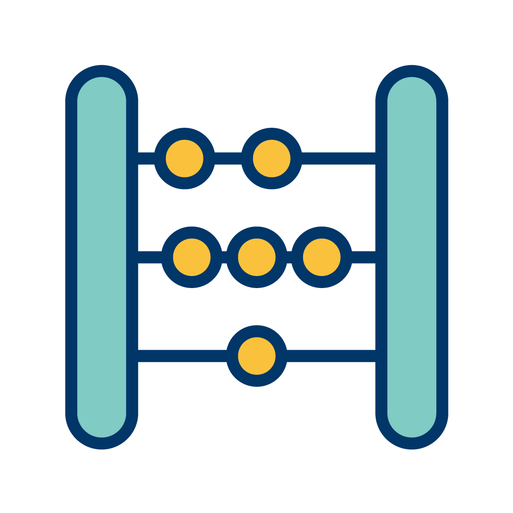
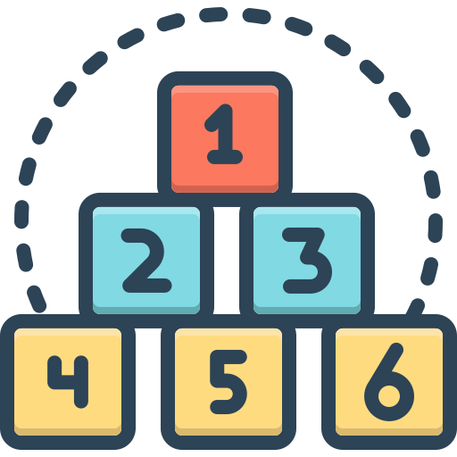
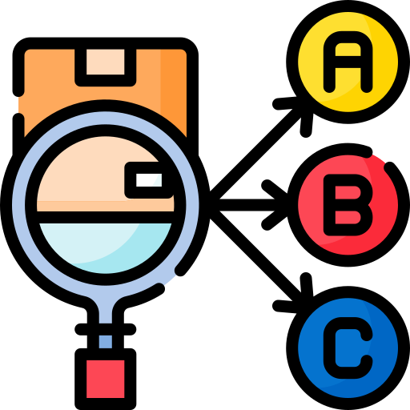

%%{init: {'flowchart': {'nodeSpacing': 20, 'rankSpacing': 50}}}%%
flowchart TD
Start([🟢 Start]) --> T1[📋 Task 1<br/>n₁ ways]
T1 --> C1[Choice 1]
T1 --> C2[Choice 2]
T1 --> Cn1[Choice n₁]
C1 --> T2[📋 Task 2<br/>n₂ ways]
C2 --> T2
Cn1 --> T2
T2 --> C21[Choice 1]
T2 --> C22[Choice 2]
T2 --> C2n[Choice n₂]
C21 --> Total[🎯 Total ways<br/>n₁ × n₂ × ... × nₖ]
C22 --> Total
C2n --> Total
classDef start fill:#d4edda,stroke:#155724,stroke-width:3px
classDef task fill:#d1ecf1,stroke:#0c5460,stroke-width:2px
classDef choice fill:#fff3cd,stroke:#856404,stroke-width:1px
classDef total fill:#f8d7da,stroke:#721c24,stroke-width:3px
class Start start
class T1,T2 task
class C1,C2,Cn1,C21,C22,C2n choice
class Total total
PSTAT 5A: Counting
Lecture 7 - Permutations
Welcome to Lecture 7
The art and science of systematic enumeration
Today’s Learning Objectives
Learning Objectives
By the end of this lecture, you will be able to:
- Apply the fundamental counting principles (Section 0.4)
- Calculate permutations with and without repetition (Section 0.8, Section 0.11, Section 0.15)
Why Study Counting?
Counting helps us:
- Calculate probabilities for complex events
- Solve optimization problems
- Understand combinations in genetics, computer science
- Analyze algorithms and data structures
- Make decisions involving arrangements and selections
Real-world applications of counting include:
- Cryptography: Password strength and encryption key space
- Genetics: DNA sequence analysis and gene combinations
- Tournament brackets: March Madness and sports competitions
- Lottery odds: Probability calculations for games of chance
- Password security: Character combinations and brute force protection

The Fundamental Counting Principle
Multiplication Rule
If a procedure consists of \(k\) separate tasks where:
Task 1 can be performed in \(n_1\) ways
Task 2 can be performed in \(n_2\) ways
…
Task \(k\) can be performed in \(n_k\) ways
Then, the entire procedure can be performed in \(n_1 \times n_2 \times \cdots \times n_k\) ways
Simple Counting Example
Format: ABC-123
\[ \underbrace{A \; B \; \_ \; \ - \_ \; \_ \; \_}_{positions} \]
First position: 26 letters
Second position: 26 letters
Third position: 26 letters
Fourth position: 10 digits
Fifth position: 10 digits
Sixth position: 10 digits
Solution. Total possibilities: \(26 \times 26 \times 26 \times 10 \times 10 \times 10 = 26^3 \times 10^3 = 17,576,000\)
Practice Problem 1
A password must contain:
Exactly 8 characters
Each character is either a letter (26 possibilities) or digit (10 possibilities)
How many possible passwords are there?

Solution. Each position has \(26 + 10 = 36\) choices.
Total: \(36^8 = 2,821,109,907,456\) passwords
What Are Permutations?
Permutation
An arrangement of objects where order matters
Order Matters
Race finish positions (1st, 2nd, 3rd)
Seating arrangements
Passwords
DNA sequences

All permutations of ABC:
1. ABC
2. ACB
3. BAC
4. BCA
5. CAB
6. CBAPermutations of \(n\) Distinct Objects
Key Formula
The number of ways to arrange \(n\) distinct objects is:
\[n! = n \times (n-1) \times (n-2) \times \cdots \times 2 \times 1\]
Seating Process:
1st position: 5 choices (Alice, Bob, Carol, David, Eve)
2nd position: 4 choices (whoever is left)
3rd position: 3 choices (whoever is left)
4th position: 2 choices (whoever is left)
5th position: 1 choice (last person)
How many ways can 5 people sit in a row?
Solution. \(5! = 5 \times 4 \times 3 \times 2 \times 1 = 120\) ways
Factorial Values
| \(n\) | \(n!\) |
|---|---|
| 0 | 1 |
| 1 | 1 |
| 2 | 2 |
| 3 | 6 |
| 4 | 24 |
| 5 | 120 |
| 10 | 3,628,800 |
Note
\(0! = 1\) by definition
Permutations of \(r\) Objects from \(n\)
Key Formula
\(P(n,r)\) or \(_nP_r\): Number of ways to arrange \(r\) objects selected from \(n\) distinct objects
\[P(n,r) = \frac{n!}{(n-r)!}\]

Note
\[ P_{k,n} = \frac{n!}{(n-k)!} = \]
\[ = \frac{ n(n-1)\cdots(n-k+1)\, \overbrace{(n-k)(n-k-1)\cdots3\cdot2\cdot1}^{(n-k)!} }{ (n-k)! } \]
\[ = \underbrace{ n (n-1) (n-2) \cdots (n-k+1) }_{k \text{ terms}} \]
Fill in \(k\) slots with no repetitions
\[
\underbrace{n \; (n-1) \; \_ \; \_ \; \cdots}_{k}
\]
Note that if we allowed repetitions we would get \(n^k\) \[ \underbrace{n \; n \; n \; \cdots \; n}_{k} \]
Example
How many ways can we select and arrange 3 people from a group of 8 for president, vice-president, and secretary?
Solution. \(P(8,3) = \frac{8!}{(8-3)!} = \frac{8!}{5!} = 8 \times 7 \times 6 = 336\)
Understanding \(P(n,r)\)
Why is \(P(n,r) = \frac{n!}{(n-r)!}\)?
- First position: \(n\) choices
- Second position: \((n-1)\) choices
- Third position: \((n-2)\) choices
- …
- \(r\)-th position: \((n-r+1)\) choices
Total: \(n \times (n-1) \times (n-2) \times \cdots \times (n-r+1) = \frac{n!}{(n-r)!}\)
Practice Problem 2
A baseball team has 15 players. How many ways can the coach:
- Arrange all 15 players in a line?
- Choose and arrange 9 players for the starting lineup (batting order matters)?

Solution.
- \(15! = 1,307,674,368,000\)
- \(P(15,9) = \frac{15!}{6!} = 1,816,214,400\)
Permutations with Repetition
Permutations with Repetition
When some objects are identical, we have fewer distinct arrangements
If we have \(n\) objects where:
\(n_1\) are of type 1
\(n_2\) are of type 2
…
\(n_k\) are of type \(k\)
Number of distinct arrangements: \(\frac{n!}{n_1! \times n_2! \times \cdots \times n_k!}\)
Permutations with Repetition Example
How many distinct arrangements are there of the letters in “STATISTICS”? 
Tip
S-T-A-T-I-S-T-I-C-S
Total letters: 10
S appears 3 times
T appears 3 times
A appears 1 time
I appears 2 times
C appears 1 time
Solution. \(\frac{10!}{3! \times 3! \times 1! \times 2! \times 1!} = \frac{3,628,800}{6 \times 6 \times 1 \times 2 \times 1} = \frac{3,628,800}{72} = 50,400\)
Learning Objectives Summary
What We’ve Covered
In this lecture, we’ve addressed all the learning objectives:
- ✅ Apply the fundamental counting principles: Covered in Section 0.4
- ✅ Calculate permutations with and without repetition: Covered in Section 0.8, Section 0.11, and Section 0.15
Questions?
Office Hours: Thursday’s 11 AM On Zoom (Link on Canvas)
Email: nmathlouthi@ucsb.edu
Next Class: Counting continued